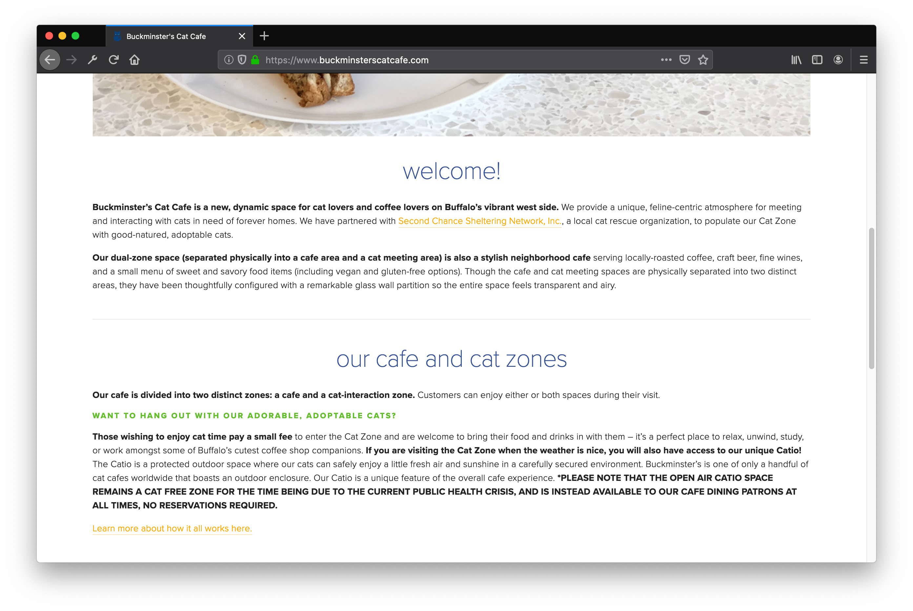
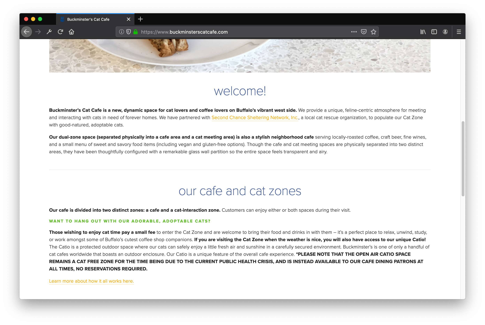
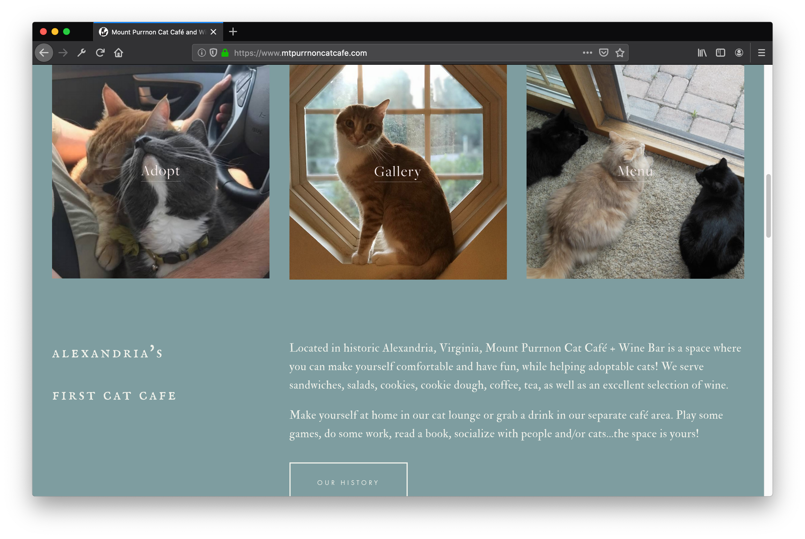
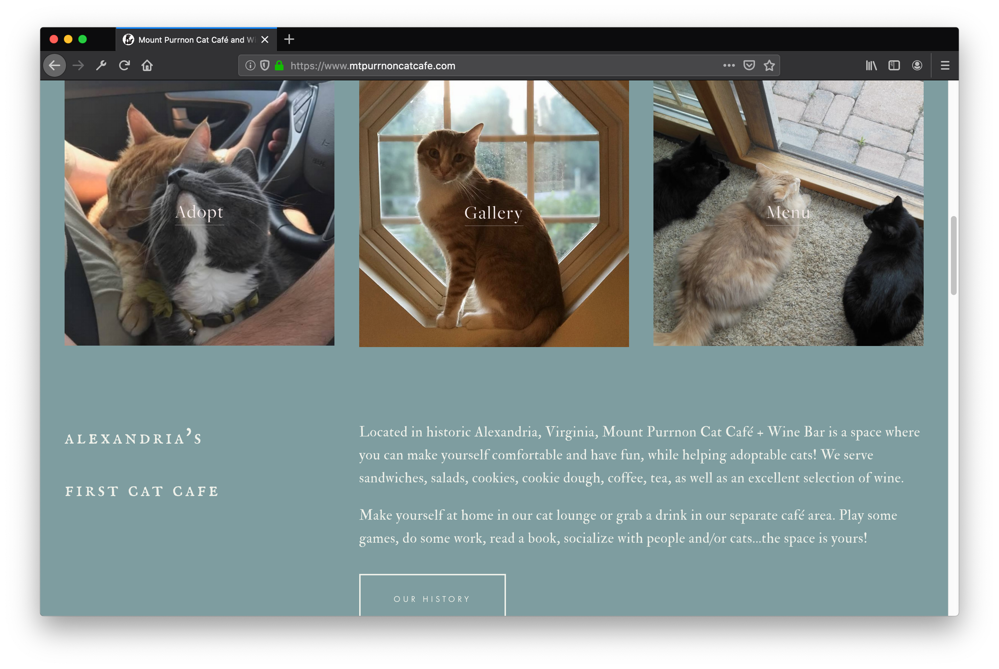
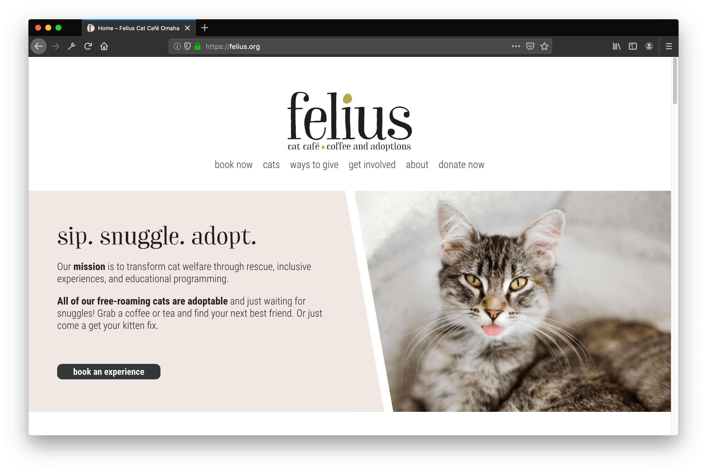
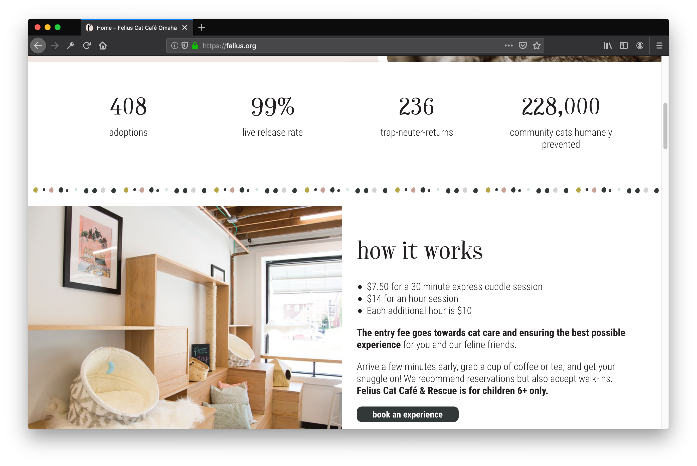

Final project proposal
Introduction
Theo's Catfe
Theo's Catfe is a coffee and tea cafe that serves drinks under the watchful purrs of adoptable cats. Patrons are able to enjoy their drinks while bonding with the cats roaming around the cafe.
Target audience
People who are fond of cats and enjoy having cats as company. People from all walks of life who would like to spend time with cats and potentially adopt would be patrons.
Patrons should be able to order a beverage of choice from the cafe and enjoy the company of the resident cats. Through the website, people can preview the menu, see which cats are currently at the cafe, and learn about the adoption process.
Comparative analysis
Buckminster's Cat Cafe
 

Mount Purrnon Cat Cafe
 

Felius Cat Cafe
 Website content
Home
The cutest coffee date you'll have.
Theo's Catfe is the purrfect place for you to enjoy your beverage while meeting adorable cats available for adoption. With a indoor/outdoor dining space and a separate cat playroom, you can choose the amount of interaction you want with the cats. We invite you to come visit and meet your next feline companion!
[Cats playing with people indoors.]
Menu
Our default milk is oat milk. Cow, almond, and soy substitutes are free of charge.
Coffee
-
Espresso
$2.00
-
Macchiato
$3.50
-
Cappuccino
$4.00
-
Latte
$4.50
-
Mocha
$5.50
-
Americano
$3.50
-
Cold brew
$3.50
-
Additional espresso shots
$1.50
Not Coffee
-
Herbal tea
$3.00
-
Jasmine tea (Green or Black)
$4.00
-
Oolong tea
$4.00
-
Chai latte
$4.50
-
Hot chocolate
$4.50
-
Fresh fruit juice
$3.00
[Various hot beverages available for purchase.]
Current cats
All cats are spayed/neutered, dewormed, flea-treated, microchipped, and up to date on their vaccinations.
-
Bumble
Male
8 months
-
Dada
Female
5 months
-
Nala
Female
15 months
-
Vinny
Male
3 years
-
Rumble
Male
8 months
-
Epsilon
Female
2 years
-
Hero
Male
7 months
-
Munchie
Female
18 months
[Multiple cats playing and relaxing.]
What's a "catfe"?
"Catfe" is short for "cat cafe", the purrfect place for you to enjoy your beverage while meeting adorable cats available for adoption. With a indoor/outdoor dining space and a separate cat playroom, you can choose the amount of interaction you want with the cats. We invite you to come visit and meet your next feline companion!
Don't want to play with the cats? No problem! Theo's Catfe keeps a separate dining and cat area just in case you would prefer to watch rather than wrestle.
[Person drinking coffee while playing with a cat.]
Adoption process
As much as we want to find homes for these wonderful cats quickly, we need to make sure they are going to be in good hands for the rest of their life.
- If you are interested in adopting, the first step to take is to fill out an interest form with the specified cat you would like to adopt.
- After we review your application, we will schedule a video or in-person interview with you to get to know you better.
- If the interview goes well—purrfect! We will prepare your newly adopted cat to be picked up the following week. Often times, our resident cats bond and need time to say goodbye.
[Cat being held by a human.]
About Theo's Catfe
Theo's Catfe was started in 2021 to brighten up people's daily cup of coffee (or tea). Although many people became new pet parents during the 2020 lockdowns, the overpopulation of cats continues to be widespread around the nation.
With the help of diligent baristas, kind volunteers, and local veterinarians, Theo's Catfe is able to connect cats to loving homes!
[Cat cafe storefront.]